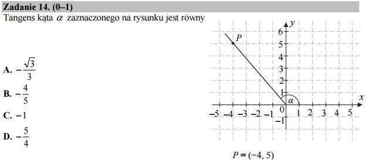

Jak skomplikować proste i popaść w kłopoty z funkcją tangens¶
Wynik otrzymujemy natychmiast bez komputera metodą przez „ogląd”:, łatwo widać, że ostatnia odpowiedz jest prawdziwa. Mówiąc inaczej korzystamy z definicji tangensa: \(tan(\alpha)=\frac{y}{x}\) dla \(x=-4\) i \(y=5\).
Wyobraźmy sobie jednak, że zapomnielismy co to tangens, ale pamiętamy,
że Sage posiada funkcję odwrotną arctan, która pozwoli nam
rozwiązać zadanie „od końca” przez wyliczenie kątów i narysowanie
wszystkie odpowiedzi w tescie. Będziemy do tego potrzebowali jeszcze
odległości od początku układu wspólrzędnych, którą wyliczymy z
Twierdzenie Pitagorasa: \(r=\sqrt{x^2+y^2}=\sqrt{5^2+4^2}\). Z
definicji sinusa i cosinusa wiemy też, że współrzędne spełniają:
Wystarczy więc dla każdej odpowiedzi z testu obliczyć kąt i narysować
odpowiadający punkt na wykresie (np. funkcją
point((x,y)). Właściwą odpowiedź rozpoznamy graficznie.
Nasuwa się pytanie: czy można jeszcze bardziej skomplikować to zadanie?
Napiszmy więc:
Jednak wykres nie jest zbyt piękny, fajnie by było ustawić takie same
zakresy osi jak w zadaniu. Aby precyzyjnie odczytać położenie punktu z
wykresu dorysujemy też siatkę z lini pionowych i poziomych
gridlines.
No to mamy już nasz program gotowy, dodajemy jeszcze @interact
by sprawdzać odpowiedzi kliknięciem w odpowiedni klawisz:
Co się okazuje, żadna odpowiedź daje punktu w tym samym miejscu jak w zadaniu? Co poszło nie tak?
Okazuje się że zawiniła właność funkcji \(\tan\). Jej okres to \(\pi\) - a nie \(2 \pi\) jak u poczciwego sinusa. Oznacza to, że jeżeli:
to także zachodzi:
Czyli działając funkcją odwrotną:
Dodajmy więc do naszego rysunku drugi punkt dlą kąta \(\phi+\pi\):
I zgadza się! W ostatnim przypadku otrzymujemy wszystkie punkty dla których \(\tan(\phi)=-\frac{5}{4}\) i \(r=\sqrt{41}\). Jednym z tych punktów jest ten z rysunku w zadaniu.
Jak to działa: gridlines
Opcja gridlines pozwala na narysowanie pionowych i poziomych lini na dowolnym wykresie w Sage. Składnia wygląda tak:
gridlines = [ [x1,x2,...,xn], [y1,y2,...,yn] ]
gdzie x1,x2,… to położenia prostych pionowych a y1,y2,… poziomych. Jest to zagnieżdżona lista, dwuelementowa, na której znajdują się dwie listy ze współrzędnymi. Przykłady:
gridlines=[[1,2,5],[]]- trzy linie pionowe
gridlines=[ range(1,20),[3]]- 19 lini pionowych i jedna pozioma